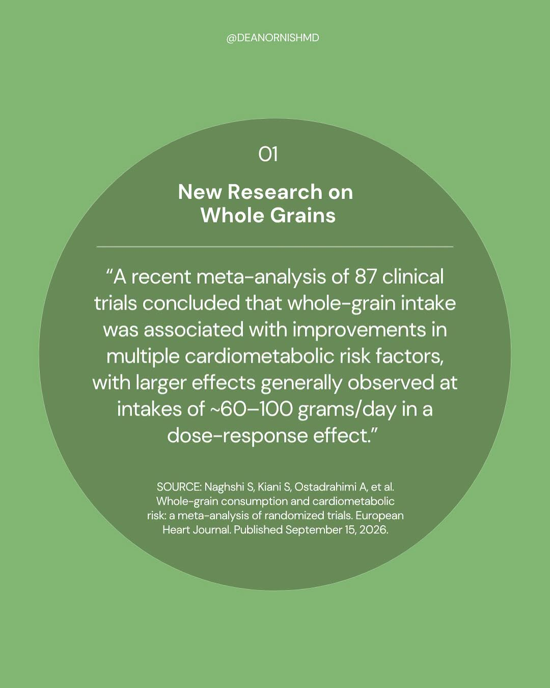
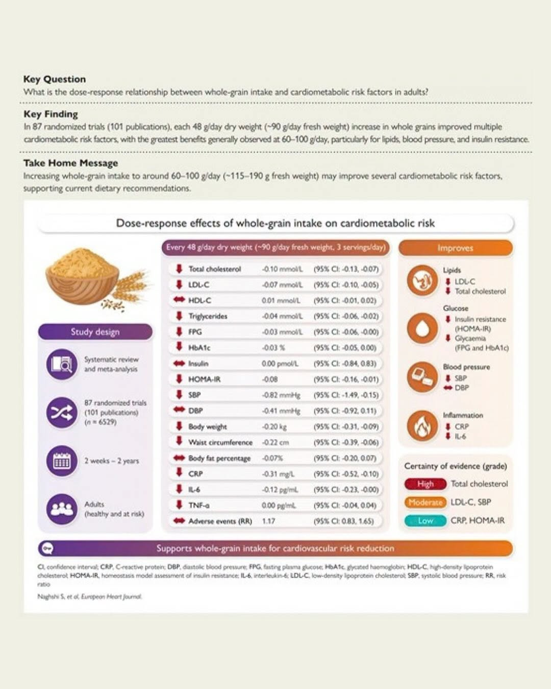
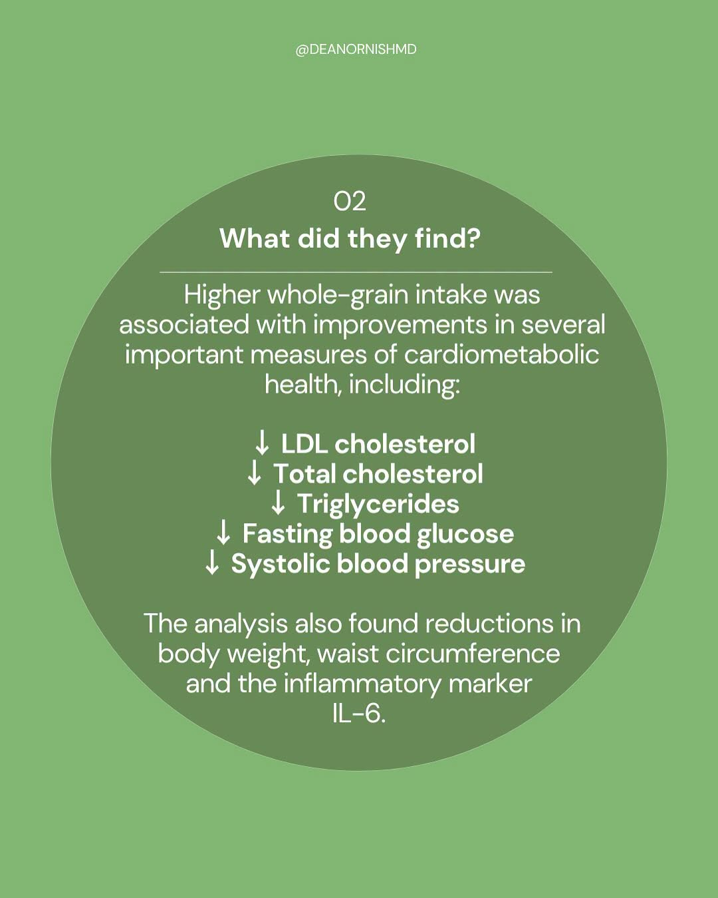
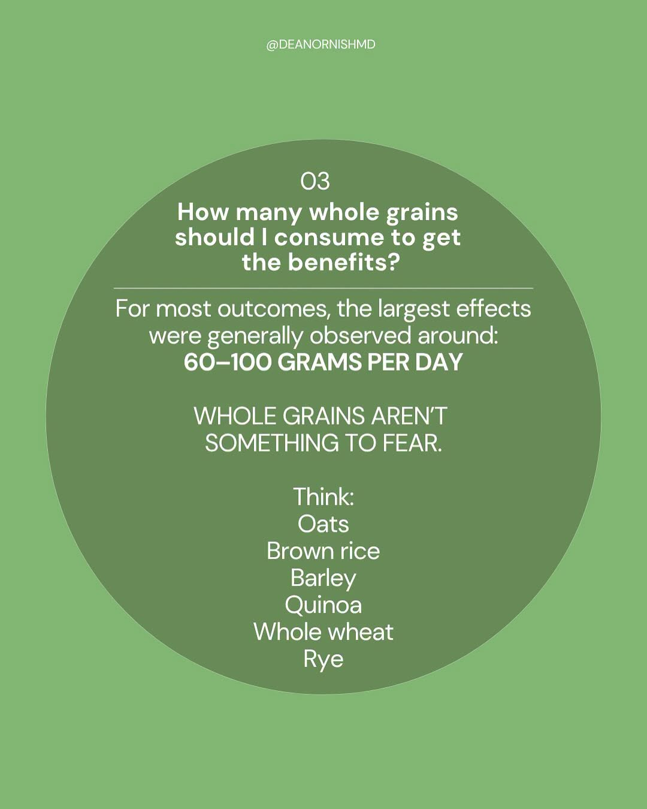

AI summary & key facts
A European Heart Journal meta-analysis of 87 randomized trials found greater whole-grain intake improved LDL and total cholesterol, triglycerides, fasting glucose and systolic blood pressure, and reduced body weight, waist and IL-6. Effects were estimated per 48 g/day and were generally largest around 60-100 g/day, though certainty of evidence varied.
- 87 randomized trials in the meta-analysis
- Improved LDL, total cholesterol, triglycerides, fasting glucose, systolic BP, weight, waist and IL-6
- Effects per extra 48 g/day dry weight; largest generally around 60-100 g/day
- Certainty varied by outcome, with sparse data at higher intakes
New research is taking a closer look at the role whole grains may play in cardiometabolic health.
A new meta-analysis published in the European Heart Journal examined 87 randomized trials and found that greater whole-grain intake was associated with improvements across several important health markers, including LDL and total cholesterol, triglycerides, fasting blood glucose and systolic blood pressure. Researchers also observed reductions in body weight, waist circumference and the inflammatory marker IL-6.
The researchers analyzed these changes for each additional 48 grams per day of whole grains by dry weight, and the largest effects for most outcomes were generally seen around 60–100 grams per day.
It’s foods like oats, barley, brown rice, quinoa, rye and whole wheat that can be an important part of an overall healthy eating pattern.
At a time when carbohydrates are often treated as something to avoid, this research is another reason to remember that the type of carbohydrate matters.
Save and share this new research with someone who might find it interesting.
#WholeGrains #HeartHealth #EatWell #NutritionScience #DeanOrnish




